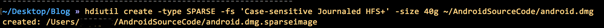
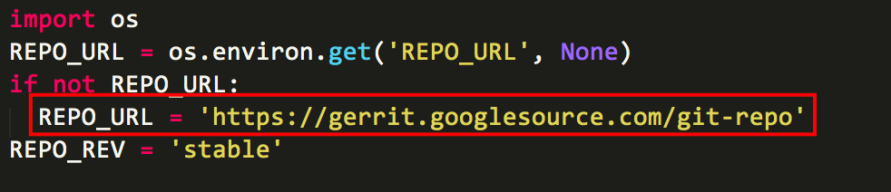
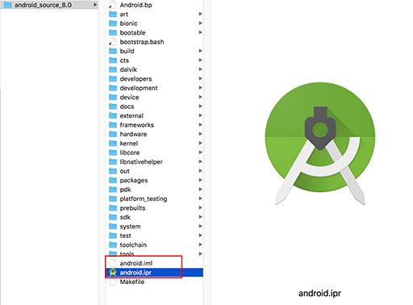
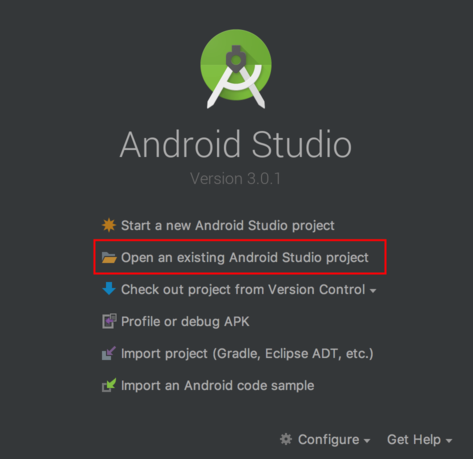
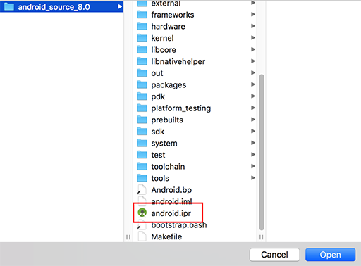

在查看源代码以及二次开发的过程中避免不了和源代码打交道。本文记录了在Mac OS(当前10.13.2版本)下载、编译Android源代码过程。
设置编译环境
Mac上默认安装是在一个保留大小写但是不区分大小写的环境下进行的，但是git命令并不能很好的支持该环境，后续编译也不能正常进行。因此在Mac上下载Android源代码之前要新建一个始终区分大小写的文件系统中，并在此文件系统中对源码进行编译等操作。
安装JDK以及 Xcode 命令行工具
安装jdk
你可以在java官网上下载最新或指定的jdk版本进行安装。也可以使用HomeBrew命令来进行安装:
brew cask info java # 查看java最新版本相关信息 |
也可以通过如下命令来进行特定版本的安装：
brew tap caskroom/versions |
安装Xcode命令行工具
xcode-select --install |
如果你已经安装过Xcode，则只需要在第一次打开的时候同意许可即可。
创建大小写敏感的磁盘映像
创建磁盘映像
-
通过磁盘文件系统创建映像
通过
应用程序—>实用工具—>磁盘工具，选择文件-->新建映像-->空白映像，填写名称大小(编译至少需要25G空间，如果是设置缓存等功能，则需要更大的控件)，格式选择Mac OS 扩展 (区分大小写，日志式) 。 -
通过shell命令
hdiutil create -type SPARSE -fs 'Case-sensitive Journaled HFS+' -size 40g ~/AndroidSourceCode/android.dmg
输出如下图：

新建的image文件可能是一个
.dmg，也可能是一个.dmg.sparseimage。可以使用如下命令来调整稀疏映像的大小：
hdiutil resize -size <new-size-you-want>g ~/AndroidSourceCode/android.dmg.sparseimage
装载及卸载磁盘映像
执行装载卸载映像，只需要执行一下命令即可：
hdiutil attach ~/AndroidSourceCode/android.dmg.sparseimage -mountpoint /Volumes/android; # 装载 |
为了方便装载及卸载映像，可以把上述代码写进.bashrc或zshrc或者类似的文件中：
# mount the android file image |
接着执行source .bashrc或者source .zshrc就可以使用mountAndroid命令装载映像，unmmountAndroid命令卸载映像。
下载源代码
初始化Repo
新建一个专门存放repo的bin文件夹，并将其添加到PATH变量中：
mkdir ~/bin |
然后下载Repo工具，在命令行中输入以下命令：
curl https://storage.googleapis.com/git-repo-downloads/repo > ~/bin/repo |
如果没有VPN，则可以用清华的镜像地址替换谷歌的地址。
REPO_URL = 'https://gerrit-googlesource.lug.ustc.edu.cn/git-repo' |

替换为：
REPO_URL = 'https://aosp.tuna.tsinghua.edu.cn/git-repo' |
加载之前创建的稀疏映像，新建工作目录：
cd /Volumes/android |
执行repo初始化指令
repo init |
如果指定地址和分支，则使用：
repo init -u https://aosp.tuna.tsinghua.edu.cn/platform/manifest -b android-8.0.0_r31 |
初始化成功之后在工作目录下会有一个.repo文件夹，包含了清单文件。
同步Android源代码树
在工作目录下运行如下命令，经过漫长的等待即可以下载到对应分支的源代码了。
repo sync |
如果已经有源码，并需要更换清华源，则需要替换.repo/manifests/default.xml中的同步源码
<manifest> |
通过下载使用每月更新的初始化包同步代码
由于上述同步工作需要下载30G的数据，任何环节出问题都可能造成同步失败，所以可以使用清华的每月初始化包进行同步代码。
下载https://mirrors.tuna.tsinghua.edu.cn/aosp-monthly/aosp-latest.tar最新的源代码tar包以及对应的md5文件，下载完成后执行以下MD5校验一下。
具体执行过程如下：
-
先下载repo工具；
-
下载初始化包并同步；
wget -c https://mirrors.tuna.tsinghua.edu.cn/aosp-monthly/aosp-latest.tar # 下载初始化包
wget -c https://mirrors.tuna.tsinghua.edu.cn/aosp-monthly/aosp-latest.tar # 下载初始化包对应的md5码
MD5 aosp-latest.tar #校验MD5码
tar xf aosp-latest.tar
cd AOSP # 解压得到的 AOSP 工程目录，这时 ls 的话什么也看不到，因为只有一个隐藏的 .repo 目录
repo sync # 正常同步一遍即可得到完整目录或 repo sync -l 仅checkout代码
切换分支
以每月更新的初始化包下载的代码，分支为默认分支，需要切换到所需的分支上。
cd .repo/manifests |
之后就可以使用命令编译源码了。
编译源代码
清除编译操作的所有输出
建议在 bash 环境下执行，否则会出现莫名其妙的问题。
make clobber |
设置环境
Android 源代码种与编译相关的文件都放在 build 目录中，其中envsetup.sh脚本是初始化环境所用：
source build/envsetup.sh |
可以简写为：
. build/envsetup.sh |
选择目标
使用lunch命令，可以在该命令后面添加参数，参数采用 BUILD-BUILDTYPE的形式指定编译目标，其中 BUILD指特定功能组合的代号，而BUILDTYPE则有 user、userdebug、eng 三种：
user：权限受限；适用于生产环境；userdebug：与“user”类似，但具有 root 权限和可调试性；是进行调试时的首选编译类型；eng：具有额外调试工具的开发配置；
如果在lunch命令后面不添加参数，则需要从提示菜单中选择一个编译目标。
编译代码
Android 源码编译命令为 make，参数为-jN，N 是介于所使用计算机硬件线程总数的1～2倍之间。
make -j8 |
常用的编译命令：
make -k # 继续编译 |
编译 fastboot 和 adb
编译 fastboot 和 adb 命令如下：
make fastboot adb |
之后可以使用物理按键的方式((对于Nexus系列可以参考这里))或者 adb reboot bootloader命令重启进入引导加载程序。
解锁及加锁引导加载程序
如果要刷写定制系统，例如各个 Android 厂商的定制 ROM，需要解锁引导加载程序，而引导加载程序默认处于锁定状态。解锁会导致系统清楚设备上的所有数据，so，在解锁之前请先备份重要文件。
解锁引导加载程序的步骤如下：
-
在设置—系统—关于本机，点按
版本号7次，当看到“您已处于开发者模式”这条消息后，点按返回按钮； -
进入开发者选项，然后启用 OEM 解锁和 USB 调试，如果 OEM 解锁处于不可用状态，则需要链接互联网，以便设备至少签到一次，之后如果仍处于锁定状态，说明设备可能已被运营商锁定 SIM 卡；
-
adb reboot bootloader命令进入引导加载程序； -
执行以下命令以解锁：
fastboot flashing unlock # 2015 之后发布的设备
fastboot oem unlock # 2014 年及之前发布的设备 -
在屏幕上确认解锁；
对于加锁过程，只需要重启到引导加载程序以后执行以下命令即可：
fastboot flashing lock # 2015 之后发布的设备 |
使用 Android Studio 加载源代码
在编译完全部源代码一次之后查看out/host/darwin-x86/framework/idegen.jar是否存在，如不存在，则使用如下命令生成该文件：
source build/envsetup.sh |
接下来生成配置文件：
development/tools/idegen/idegen.sh |
之后会在源码目录下生成android.ipr和android.iml文件。

打开 Android Studio 加载ipr文件即可。


遇到的问题
-
RPC failed; curl 18 transfer closed with outstanding read data remaining.
因为curl的postBuffer默认值太小的原因，重新在终端配置一下这个值就可以了。
git config –global http.postBuffer 524288000
-
curl: (22) The requested URL returned error: 404 Server does not provide clone.bundle; ignoring.
无视即可
-
error.GitError: device/asus/fugu-kernel rev-list (’^fb4baab945ff1b696b84a8bd9af3d54032d3cfaa’, ‘HEAD’, ‘–’): fatal: bad object HEAD
cd AOSP/device/asus/fugu-kernel
git fetch --all -
curl: (35) LibreSSL SSL_connect: SSL_ERROR_SYSCALL in connection to android.googlesource.com:443
升级系统自带的libressl, openssl 和 curl 即可
-
repo sync discarding xxx commits.
repo forall -c 'git reset --hard; git clean -f -d -x';
-
external/error_prone/soong/Android.bp:1:1: “soong-java-config-error_prone” depends on undefined module “soong-java-config” ninja: error: rebuilding ‘out/soong/.minibootstrap/build.ninja’: subcommand failed.
删除soong相关的文件
external/error_prone/soong以及out文件夹，然后执行repo sync命令。 -
Could not find a supported mac sdk: [“10.10” “10.11” “10.12”]
下载 10.13 版本的SDK，解压到
/Applications/XCode.app/Contents/Developer/Platforms/MacOSX.platform/Developer/SDKs/目录下 -
frameworks/layoutlib: MODULE.darwin.JAVA_LIBRARIES.temp_layoutlib already defined by frameworks/base/tools/layoutlib.
删除源码中的 framworks 文件夹，重新执行
repo sync -
FAILED: out/soong/.intermediates/system/tools/aidl/libaidl- common/darwin_x86_64_static/gen/yacc/system/tools/aidl/aidl_language_y.cpp out/soong/.intermediates/system/tools/aidl/libaidl-common/darwin_x86_64_static/gen/yacc/system/tools/aidl/aidl_language_y.h
是因为 bison 造成的，需要给 bison 打补丁，并且替换现有的 /prebuilt/ 目录下的二进制文件，具体做法如下：
cd /Volumes/AOSP/external/bison
git cherry-pick c0c852bd6fe462b148475476d9124fd740eba160
mm
cp /Volumes/AOSP/out/host/darwin-x86/bin/bison /Volumes/AOSP/prebuilts/misc/darwin-x86/bison/参考网址https://groups.google.com/forum/#!topic/android-building/D1-c5lZ9Oco
-
Unsupported curl, please use a curl not based on SecureTransport. Jack server installation not found
brew install curl --with-openssl
echo 'export PATH=$(brew --prefix curl)/bin:$PATH' >> ~/.zshrc
source ~/.zshrc
caffeinate make -j8 # caffeinate是为了防止OS X 进入睡眠 -
/bin/bash: xz: command not found
brew install xz
-
Couldn’t locate the directory development/tools/idegen
是因为编译时使用zsh，要切换到bash环境下：
bash
mmm development/tools/idegen/ -
fatal error: error in backend: IO failure on output stream.
是因为磁盘分区小了，扩大磁盘分区：
sudo hdiutil resize -size <new-size-you-want>g ~/android.dmg.sparseimage